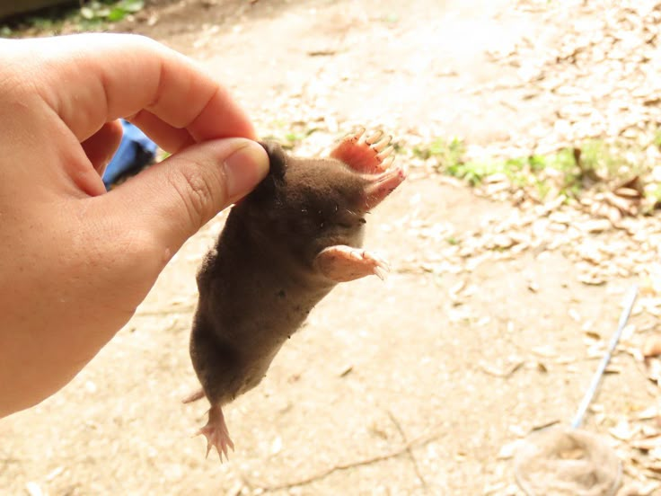

越式法國麵包（越南語：Bánh mì Việt Nam／餅麵越南?，「餅麵」即麵餅，意指麵粉做的餅）或稱越南式三明治或越南麵餅，是一種具東南亞色彩的三明治,一些地區會稱為三明治，因使用法國麵包製作故名，可以視為一種潛艇堡。雖然在國際上常被當成越南特色菜，但此食品廣泛流行於前中南半島等地區，在越南、柬埔寨、寮國均為日常食品，寮語稱為「khao jee pâté」（ເຂົ້າຈີ່ປາເຕ），高棉語則稱為「num pang」（នំបុ័ង）。製作該麵包時，除了用麵粉外，亦會加入米粉，質感相對較脆，也較傳統法國麵包為輕[1]。
